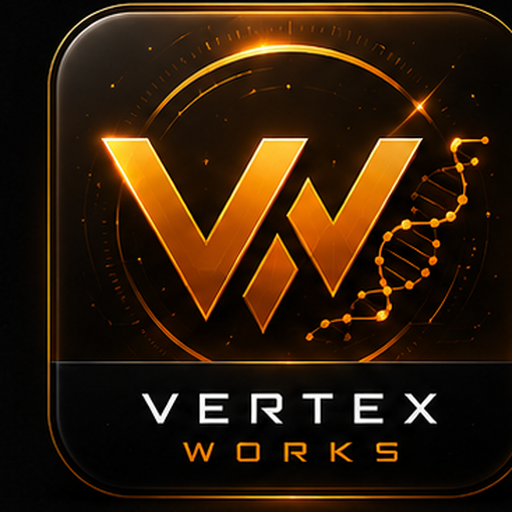

VERTEX WORKS
VERTEX RAY
01
RAY
OBSERVE / COMPARE
02
FORGE
RECEIVE / BUILD
RAY ⇄ FORGE CONTINUITY
Project Intelligence / Blueprint
⚙
VERTEX SETTINGS
DISPLAY
×
INTERFACE LANGUAGE
VERTEX WORKS runs English-only
JA
EN
Display settings are stored on this workstation.
VERTEX RAY
PROJECT INTELLIGENCE
構造観測 · 比較 · Blueprint · Evidence Driven · Read Only
DEPENDENCY
RUNTIME
CORRELATION
SUPERIORITY
LINEAGE
LIVE
READY
FME LINEAGE / PROJECT BLUEPRINT
Project Blueprint
＋ 関係追加
ALL
DEPENDENCY
RUNTIME
CORRELATION
SUPERIORITY
LINEAGE
関係追加モード
接続元Projectを選択
×
VERTEX PROJECT
スキャン待機中
構造ヘルス
—
HEALTH
リスク分析
0
LOW
分析結果
コンポーネント
0
ディレクトリ
0
走査容量
0 MB
ARTIFACT ENGINEERING · VERIFICATION · DISPATCH
VERTEX
WORKS
受信 → 検査 → 鍛造 → 検証 → Evidence → ディスパッチ
VERTEX SHELL
ACTIVE
00:00
BOOTING
受信
0
受信アーティファクト
準備完了
0
検証済み / 待機
検証完了
0
完了アーティファクト
要確認
0
不正 / 検証失敗
受信ベイ
—
許可済みProduction Root
—
01 / 受信ベイ
受信アーティファクト
名前
種別
更新
02 / 検査 + HUMAN GATE
アーティファクト・インスペクタ
NO SELECTION
VRA
受信アーティファクトを選択
Receiving BayからVRAを選択すると Manifest / SHA / Authority を検査します。
ID
TITLE
SOURCE
TARGET
AUTHORITY
PAYLOAD
ステージ
適用 / FORGE
ロールバック
RECOVERY / RETURN LANE
READY
エラーレポート
Evidenceをコピー
03 / FOUNDRY STREAM
Vertex Shell
STANDBY
クリア
VERTEX WORKS FOUNDRY READY — real verification stream
04 / EVIDENCE VAULT
Works Ledger
クリア